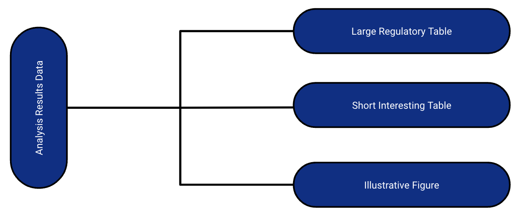
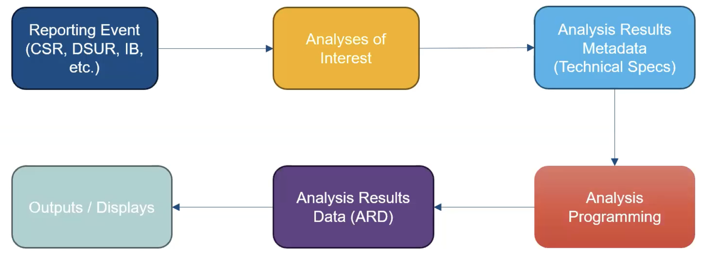
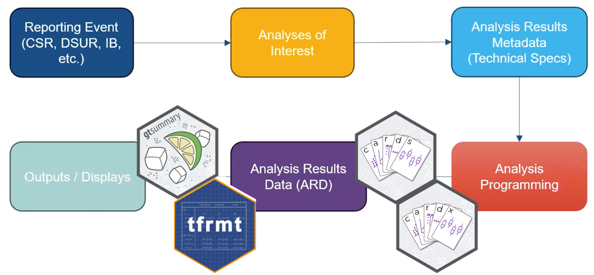
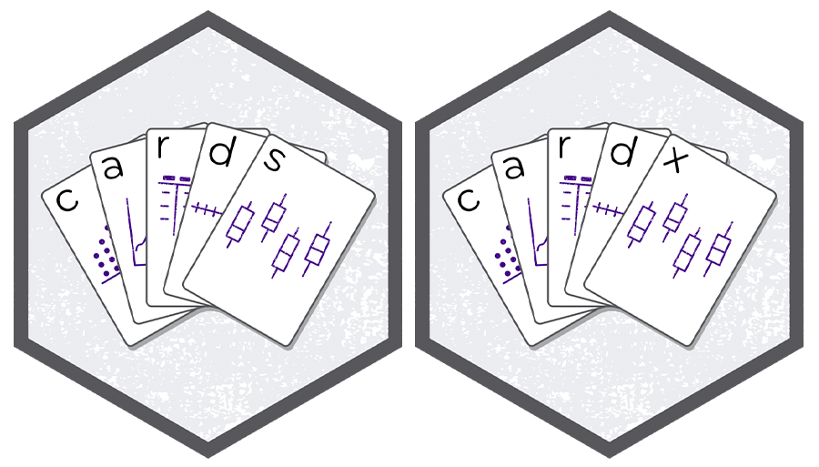
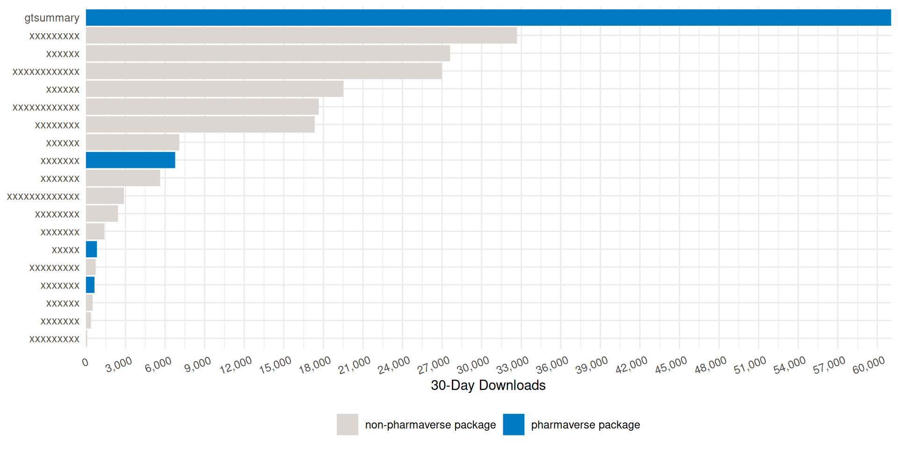
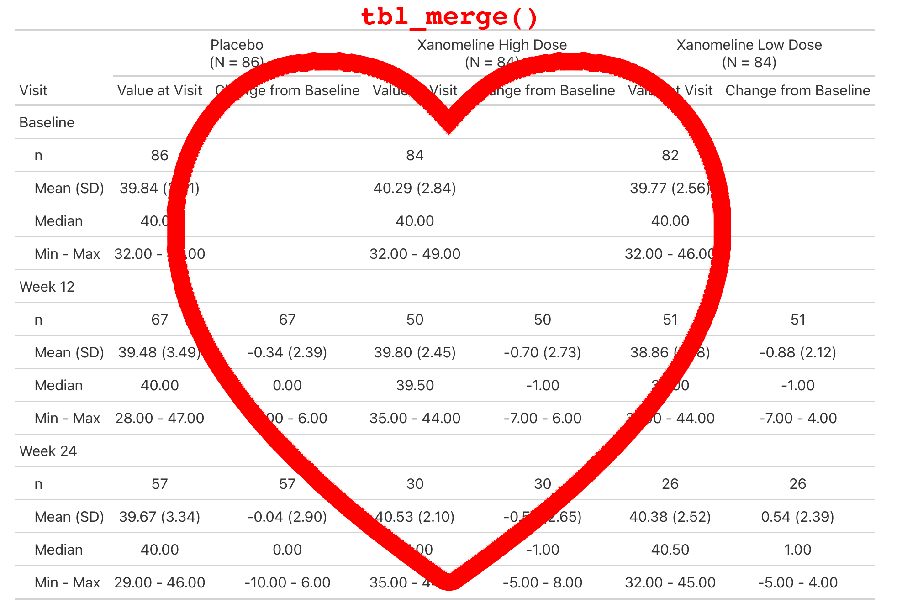

Enterprise {gtsummary}
Themes, ARDs, and Custom Extensions for Pharma


Daniel D. Sjoberg and Shannon Pileggi
R/Pharma 2026
Introduction
Acknowledgements

This work is licensed under a Creative Commons Attribution-ShareAlike 4.0 International License (CC BY-SA4.0).
Your instructors
Questions
Please ask questions at any time!

What we will cover
Analysis Results Datasets — build the numbers first with {cards}, so every table has something auditable behind it.
{gtsummary} fundamentals —
tbl_summary(), hierarchical adverse event tables, merging and stacking.ARD-first tables — every cell traceable, and QC by comparing one ARD against another.
Print engines — {gt}, {flextable}, and submission-ready Word output.
Adopting {gtsummary} — a house theme, wrappers of your own, and {crane}.
Coding agents — writing your standards down so an agent follows them without being reminded.
Analysis Results Datasets
What are ARDs?
Dataset that stores key metadata and raw results from analysis
Long dataset that is 1 record per result value
May contained formatted values as well
The ARD can be used to to subsequently create tables and figures.
The ARD does not describe the layout of the results
Analysis Results Data (ARD)
- After the initial creation of an ARD, the results can later be re-used again and again for subsequent reporting needs.

A few notes about ARDs
ARDs give us the opportunity to rethink QC
QC can be focused on the raw value, as well as the formatted display
- You don’t have to waste time trying to match formatting to match QC
ARDs can be flexibly saved to different file types
- For example: a dataset (rds, xpt, etc) or json file
Zooming Out: The Analysis Results Standard (ARS)

Objectives include:
- To leverage analysis results metadata to drive the automation of results
- To support storage, access, processing, traceability and reproducibility of results
- Learn more at https://www.cdisc.org/events/webinar/analysis-results-standard-public-review
Proposed Metadata Framework in the ARS

- The ARS provides a metadata-driven infrastructure for analysis
Proposed Metadata Framework in the ARS

The ARS provides a metadata-driven infrastructure for analysis
{cards} serves as the engine for the analysis
ARDs using {cards}

{cards}: Introduction
Part of the Pharmaverse
Collaboration between Roche, GSK, Novartis, Eli Lilly, Pfizer
Contains a variety of utilities for making ARDs
Can be used within the ARS workflow and separately
59K downloads per month 🤯
Data used in examples
ADSL from pharmaverseadam
ADAE from pharmaverseadam
{cards}: ard_tabulate()
- includes
n,%,Nby default - Any unobserved levels of the variables will be present in the resulting ARD.
# An ARD data frame: 6 × 9
variable variable_level context stat_name stat_label stat fmt_fun warning error
* <chr> <list> <chr> <chr> <chr> <list> <list> <list> <list>
1 AGEGR1 18-64 tabulate n n 33 0 <NULL> <NULL>
2 AGEGR1 18-64 tabulate N N 254 0 <NULL> <NULL>
3 AGEGR1 18-64 tabulate p % 0.130 <fn> <NULL> <NULL>
4 AGEGR1 >64 tabulate n n 221 0 <NULL> <NULL>
5 AGEGR1 >64 tabulate N N 254 0 <NULL> <NULL>
6 AGEGR1 >64 tabulate p % 0.870 <fn> <NULL> <NULL>{cards}: ard_tabulate()
- includes
n,%,Nby default - Any unobserved levels of the variables will be present in the resulting ARD.
# An ARD data frame: 12 × 11
group1 group1_level variable variable_level context stat_name stat_label stat fmt_fun warning error
* <chr> <list> <chr> <list> <chr> <chr> <chr> <list> <list> <list> <list>
1 ARM2 Placebo AGEGR1 18-64 tabulate n n 14 0 <NULL> <NULL>
2 ARM2 Placebo AGEGR1 18-64 tabulate N N 86 0 <NULL> <NULL>
3 ARM2 Placebo AGEGR1 18-64 tabulate p % 0.163 <fn> <NULL> <NULL>
4 ARM2 Placebo AGEGR1 >64 tabulate n n 72 0 <NULL> <NULL>
5 ARM2 Placebo AGEGR1 >64 tabulate N N 86 0 <NULL> <NULL>
6 ARM2 Placebo AGEGR1 >64 tabulate p % 0.837 <fn> <NULL> <NULL>
7 ARM2 Xanomeline AGEGR1 18-64 tabulate n n 19 0 <NULL> <NULL>
8 ARM2 Xanomeline AGEGR1 18-64 tabulate N N 168 0 <NULL> <NULL>
# ℹ 4 more rows{cards}: ard_summary()
# An ARD data frame: 8 × 8
variable context stat_name stat_label stat fmt_fun warning error
* <chr> <chr> <chr> <chr> <list> <list> <list> <list>
1 AGE summary N N 254 0 <NULL> <NULL>
2 AGE summary mean Mean 75.1 1 <NULL> <NULL>
3 AGE summary sd SD 8.25 1 <NULL> <NULL>
4 AGE summary median Median 77 1 <NULL> <NULL>
5 AGE summary p25 Q1 70 1 <NULL> <NULL>
6 AGE summary p75 Q3 81 1 <NULL> <NULL>
7 AGE summary min Min 51 1 <NULL> <NULL>
8 AGE summary max Max 89 1 <NULL> <NULL>{cards}: ard_summary() by variable
by: summary statistics are calculated by all combinations of the by variables, including unobserved factor levels
# An ARD data frame: 16 × 10
group1 group1_level variable context stat_name stat_label stat fmt_fun warning error
* <chr> <list> <chr> <chr> <chr> <chr> <list> <list> <list> <list>
1 ARM2 Placebo AGE summary N N 86 0 <NULL> <NULL>
2 ARM2 Placebo AGE summary mean Mean 75.2 1 <NULL> <NULL>
3 ARM2 Placebo AGE summary sd SD 8.59 1 <NULL> <NULL>
4 ARM2 Placebo AGE summary median Median 76 1 <NULL> <NULL>
5 ARM2 Placebo AGE summary p25 Q1 69 1 <NULL> <NULL>
6 ARM2 Placebo AGE summary p75 Q3 82 1 <NULL> <NULL>
7 ARM2 Placebo AGE summary min Min 52 1 <NULL> <NULL>
8 ARM2 Placebo AGE summary max Max 89 1 <NULL> <NULL>
# ℹ 8 more rows{cards}: ard_summary() statistics
statistic: specify univariate summary statistics. Accepts any function, base R, from a package, or user-defined.
# An ARD data frame: 2 × 10
group1 group1_level variable context stat_name stat_label stat fmt_fun warning error
* <chr> <list> <chr> <chr> <chr> <chr> <list> <list> <list> <list>
1 ARM2 Placebo AGE summary cv cv 0.114 1 <NULL> <NULL>
2 ARM2 Xanomeline AGE summary cv cv 0.108 1 <NULL> <NULL>{cards}: ard_summary() statistics
Customize the statistics returned for each variable
# An ARD data frame: 6 × 10
group1 group1_level variable context stat_name stat_label stat fmt_fun warning error
* <chr> <list> <chr> <chr> <chr> <chr> <list> <list> <list> <list>
1 ARM2 Placebo AGE summary cv cv 0.114 1 <NULL> <NULL>
2 ARM2 Placebo AGE2 summary mean Mean 75.2 1 <NULL> <NULL>
3 ARM2 Placebo AGE2 summary median Median 76 1 <NULL> <NULL>
4 ARM2 Xanomeline AGE summary cv cv 0.108 1 <NULL> <NULL>
5 ARM2 Xanomeline AGE2 summary mean Mean 75.0 1 <NULL> <NULL>
6 ARM2 Xanomeline AGE2 summary median Median 77 1 <NULL> <NULL>{cards}: ard_summary() fmt_fun
- Override the default formatting functions
- Can also update later via
update_ard_fmt_fun()
# An ARD data frame: 16 × 11
group1 group1_level variable context stat_name stat_label stat stat_fmt fmt_fun warning error
<chr> <list> <chr> <chr> <chr> <chr> <list> <list> <list> <list> <list>
1 ARM2 Placebo AGE summary N N 86 86 0 <NULL> <NULL>
2 ARM2 Placebo AGE summary mean Mean 75.2 75 0 <NULL> <NULL>
3 ARM2 Placebo AGE summary sd SD 8.59 8.6 1 <NULL> <NULL>
4 ARM2 Placebo AGE summary median Median 76 76.0 1 <NULL> <NULL>
5 ARM2 Placebo AGE summary p25 Q1 69 69.0 1 <NULL> <NULL>
6 ARM2 Placebo AGE summary p75 Q3 82 82.0 1 <NULL> <NULL>
7 ARM2 Placebo AGE summary min Min 52 52.0 1 <NULL> <NULL>
# ℹ 9 more rows{cards}: Other Summary Functions
ard_tabulate_value(): similar toard_tabulate(), but for dichotomous tabulationsard_hierarchical(): similar toard_tabulate(), but built for nested tabulations, e.g. AE terms within SOCard_mvsummary(): similar toard_summary(), for multivariate summaries. The function accepts other arguments like the full and subsetted (within the by groups) data sets.ard_missing(): tabulates rates of missingness
The results from all these functions are entirely compatible with one another, and can be stacked into a single data frame. 🥞
{cards}: Other Functions
In addition to exporting functions to prepare summaries, {cards} exports many utilities for wrangling ARDs and creating new ARDs.
Constructing: bind_ard(), tidy_as_ard(), nest_for_ard(), check_ard_structure(), and many more
Wrangling: get_ard_statistics(), replace_null_statistic(), etc.
{cards}: Stacking utilities
dataand.byare shared by allard_*callsAdditional Options
.overall,.missing,.attributes, and.total_nprovide even more resultsBy default, summaries of the
.byvariable are included
# An ARD data frame: 14 × 11
group1 group1_level variable variable_level context stat_name stat_label stat fmt_fun warning error
<chr> <list> <chr> <list> <chr> <chr> <chr> <list> <list> <list> <list>
1 ARM2 Placebo AGE <NULL> summary mean Mean 75.2 1 <NULL> <NULL>
2 ARM2 Placebo AGE <NULL> summary sd SD 8.59 1 <NULL> <NULL>
3 ARM2 Placebo AGEGR1 18-64 tabulate p % 0.163 <fn> <NULL> <NULL>
4 ARM2 Placebo AGEGR1 >64 tabulate p % 0.837 <fn> <NULL> <NULL>
5 ARM2 Xanomeline AGE <NULL> summary mean Mean 75.0 1 <NULL> <NULL>
6 ARM2 Xanomeline AGE <NULL> summary sd SD 8.09 1 <NULL> <NULL>
# ℹ 8 more rowsQuick recap!
- Let’s compute summaries for a demography table that includes age (AGE), age group (AGEGR1), and sex (SEX) by treatment (ARM2)
- First, we compute the continuous summaries for AGE by ARM2
Quick recap!
- Let’s compute summaries for a demography table that includes age (AGE), age group (AGEGR1), and sex (SEX) by treatment (ARM2)
- First, we compute the continuous summaries for AGE by ARM2
# An ARD data frame: 16 × 10
group1 group1_level variable context stat_name stat_label stat fmt_fun warning error
* <chr> <list> <chr> <chr> <chr> <chr> <list> <list> <list> <list>
1 ARM2 Placebo AGE summary N N 86 0 <NULL> <NULL>
2 ARM2 Placebo AGE summary mean Mean 75.2 1 <NULL> <NULL>
3 ARM2 Placebo AGE summary sd SD 8.59 1 <NULL> <NULL>
4 ARM2 Placebo AGE summary median Median 76 1 <NULL> <NULL>
5 ARM2 Placebo AGE summary p25 Q1 69 1 <NULL> <NULL>
6 ARM2 Placebo AGE summary p75 Q3 82 1 <NULL> <NULL>
7 ARM2 Placebo AGE summary min Min 52 1 <NULL> <NULL>
# ℹ 9 more rowsQuick recap!
- Let’s compute summaries for a demography table that includes age (AGE), age group (AGEGR1), and sex (SEX) by treatment (ARM2)
- Next, we compute the categorical summaries for AGEGR1 and SEX by ARM2
Quick recap!
- Let’s compute summaries for a demography table that includes age (AGE), age group (AGEGR1), and sex (SEX) by treatment (ARM2)
- Next, we compute the categorical summaries for AGEGR1 and SEX by ARM2
# An ARD data frame: 24 × 11
group1 group1_level variable variable_level context stat_name stat_label stat fmt_fun warning error
* <chr> <list> <chr> <list> <chr> <chr> <chr> <list> <list> <list> <list>
1 ARM2 Placebo AGEGR1 18-64 tabulate n n 14 0 <NULL> <NULL>
2 ARM2 Placebo AGEGR1 18-64 tabulate N N 86 0 <NULL> <NULL>
3 ARM2 Placebo AGEGR1 18-64 tabulate p % 0.163 <fn> <NULL> <NULL>
4 ARM2 Placebo AGEGR1 >64 tabulate n n 72 0 <NULL> <NULL>
5 ARM2 Placebo AGEGR1 >64 tabulate N N 86 0 <NULL> <NULL>
6 ARM2 Placebo AGEGR1 >64 tabulate p % 0.837 <fn> <NULL> <NULL>
7 ARM2 Placebo SEX F tabulate n n 53 0 <NULL> <NULL>
# ℹ 17 more rowsQuick recap!
Let’s compute summaries for a demography table that includes age (AGE), age group (AGEGR1), and sex (SEX) by treatment (ARM2) in a single ard_stack() call, including:
summaries by ARM2 as performed above
continuous summaries from part A for AGE
categorical summaries from part B for AGEGR1 and SEX
Quick recap!
Let’s compute summaries for a demography table that includes age (AGE), age group (AGEGR1), and sex (SEX) by treatment (ARM2) in a single ard_stack() call, including:
summaries by ARM2 as performed above
continuous summaries from part A for AGE
categorical summaries from part B for AGEGR1 and SEX
# An ARD data frame: 46 × 11
group1 group1_level variable variable_level context stat_name stat_label stat fmt_fun warning error
<chr> <list> <chr> <list> <chr> <chr> <chr> <list> <list> <list> <list>
1 ARM2 Placebo AGE <NULL> summary N N 86 0 <NULL> <NULL>
2 ARM2 Placebo AGE <NULL> summary mean Mean 75.2 1 <NULL> <NULL>
3 ARM2 Placebo AGE <NULL> summary sd SD 8.59 1 <NULL> <NULL>
4 ARM2 Placebo AGE <NULL> summary median Median 76 1 <NULL> <NULL>
5 ARM2 Placebo AGE <NULL> summary p25 Q1 69 1 <NULL> <NULL>
# ℹ 41 more rowsQuick recap!
We can also add:
- Overall summaries for all variables
- Total N
# An ARD data frame: 67 × 11
group1 group1_level variable variable_level context stat_name stat_label stat fmt_fun warning error
<chr> <list> <chr> <list> <chr> <chr> <chr> <list> <list> <list> <list>
1 ARM2 Placebo AGE <NULL> summary N N 86 0 <NULL> <NULL>
2 ARM2 Placebo AGE <NULL> summary mean Mean 75.2 1 <NULL> <NULL>
3 ARM2 Placebo AGE <NULL> summary sd SD 8.59 1 <NULL> <NULL>
4 ARM2 Placebo AGE <NULL> summary median Median 76 1 <NULL> <NULL>
5 ARM2 Placebo AGE <NULL> summary p25 Q1 69 1 <NULL> <NULL>
# ℹ 62 more rows{cards}: Hierarchical Summary Functions
Following hierarchical summary functions aid in nested tabulations (e.g. AE terms within SOC):
ard_stack_hierarchical(): calculating nested subject-level ratesard_stack_hierarchical_count(): calculating nested event-level counts
{cards}: ard_stack_hierarchical
Our go-to function for nested subject-level rates — one call handles the whole hierarchy
A single call returns rows for both the System Organ Class (
group2_level) and the nested AE term (variable_level)idchecks for duplicate rows and subsets the data along the way;denominatordictates the denominator for the rates
# An ARD data frame: 12 × 13
group1 group1_level group2 group2_level variable variable_level context stat_name stat_label stat fmt_fun warning error
<chr> <list> <chr> <list> <chr> <list> <chr> <chr> <chr> <list> <list> <list> <list>
1 TRT01A Placebo <NA> <NULL> AESOC GASTROINTESTINAL DISORDERS hierarchical n n 12 0 <NULL> <NULL>
2 TRT01A Placebo <NA> <NULL> AESOC GASTROINTESTINAL DISORDERS hierarchical N N 86 0 <NULL> <NULL>
3 TRT01A Placebo <NA> <NULL> AESOC GASTROINTESTINAL DISORDERS hierarchical p % 0.140 <fn> <NULL> <NULL>
4 TRT01A Placebo AESOC GASTROINTESTINAL DISORDERS AEDECOD DIARRHOEA hierarchical n n 9 0 <NULL> <NULL>
# ℹ 8 more rowsWhy the stacking functions?
Displays for hierarchical data report on each level of the hierarchy (by System Organ Class, by Preferred Term)
Producing that by hand means several calls to the simpler
ard_hierarchical()/ard_hierarchical_count()functions, each on a different subset of the dataard_stack_hierarchical*()runs those calls in the background and stacks the results into one ARD
{cards}: ard_stack_hierarchical_count
- Below is the stacking function for event-level summaries, aligned with
ard_hierarchical_count()
# An ARD data frame: 4 × 13
group1 group1_level group2 group2_level variable variable_level context stat_name stat_label stat fmt_fun warning error
<chr> <list> <chr> <list> <chr> <list> <chr> <chr> <chr> <list> <list> <list> <list>
1 TRT01A Placebo <NA> <NULL> AESOC GASTROINTESTINAL DISORDERS hierarchical_count n n 15 0 <NULL> <NULL>
2 TRT01A Placebo AESOC GASTROINTESTINAL DISORDERS AEDECOD DIARRHOEA hierarchical_count n n 10 0 <NULL> <NULL>
3 TRT01A Placebo AESOC GASTROINTESTINAL DISORDERS AEDECOD HIATUS HERNIA hierarchical_count n n 2 0 <NULL> <NULL>
4 TRT01A Placebo AESOC GASTROINTESTINAL DISORDERS AEDECOD VOMITING hierarchical_count n n 3 0 <NULL> <NULL>Exercise 🏃➡️
Open the script
exercises/exercises.Rin RStudio and find Exercise 1.Compute the nested AE tabulations as described.
Add the “completed” sticky note to your laptop when complete.
{cardx}
Extension of the {cards} package, providing additional functions to create Analysis Results Datasets (ARDs)
The {cardx} package exports many
ard_*()function for statistical methods.

{cardx}
- Exports ARD frameworks for statistical analyses from many packages
- {stats}
- {car}
- {effectsize}
- {emmeans}
- {geepack}
- {lme4}
- {parameters}
- {smd}
- {survey}
- {survival}- This list is growing (rather quickly) 🌱
{cardx} t-test Example
We see the results like the mean difference, the confidence interval, and p-value as expected.
And we also see the function’s inputs, which is incredibly useful for re-use, e.g. we know that we did not use equal variances.
# An ARD data frame: 14 × 9
group1 variable context stat_name stat_label stat fmt_fun warning error
<chr> <chr> <chr> <chr> <chr> <named list> <named list> <named list> <named list>
1 ARM2 AGE stats_t_test estimate Mean Difference 0.1854928 1 <NULL> <NULL>
2 ARM2 AGE stats_t_test estimate1 Group 1 Mean 75.2093 1 <NULL> <NULL>
3 ARM2 AGE stats_t_test estimate2 Group 2 Mean 75.02381 1 <NULL> <NULL>
4 ARM2 AGE stats_t_test statistic t Statistic 0.1660687 1 <NULL> <NULL>
5 ARM2 AGE stats_t_test p.value p-value 0.8683091 1 <NULL> <NULL>
6 ARM2 AGE stats_t_test parameter Degrees of Freedom 162.6425 1 <NULL> <NULL>
7 ARM2 AGE stats_t_test conf.low CI Lower Bound -2.020129 1 <NULL> <NULL>
8 ARM2 AGE stats_t_test conf.high CI Upper Bound 2.391114 1 <NULL> <NULL>
9 ARM2 AGE stats_t_test method method Welch Two Sample t-test <NULL> <NULL> <NULL>
10 ARM2 AGE stats_t_test alternative alternative two.sided <NULL> <NULL> <NULL>
# ℹ 4 more rows{cardx} t-test Example
What to do if a method you need is not implemented?
It’s simple to wrap existing frameworks to customize.
One-sample t-test example utilizing
cards::ard_summary().
# An ARD data frame: 8 × 8
variable context stat_name stat_label stat fmt_fun warning error
<chr> <chr> <chr> <chr> <list> <list> <list> <list>
1 AGE t_test_one_sample estimate estimate 75.08661 1 <NULL> <NULL>
2 AGE t_test_one_sample statistic statistic 145.1188 1 <NULL> <NULL>
3 AGE t_test_one_sample p.value p.value 1.333805e-245 1 <NULL> <NULL>
4 AGE t_test_one_sample parameter parameter 253 1 <NULL> <NULL>
5 AGE t_test_one_sample conf.low conf.low 74.06763 1 <NULL> <NULL>
6 AGE t_test_one_sample conf.high conf.high 76.1056 1 <NULL> <NULL>
7 AGE t_test_one_sample method method One Sample t-test <fn> <NULL> <NULL>
8 AGE t_test_one_sample alternative alternative two.sided <fn> <NULL> <NULL>{cardx} t-test Example
- How to modify if we need a two-sample test, or more generally accessing other columns in the data frame.
# An ARD data frame: 10 × 9
group1 variable context stat_name stat_label stat fmt_fun warning error
<chr> <chr> <chr> <chr> <chr> <list> <list> <list> <list>
1 ARM2 AGE t_test_two_sample estimate estimate 0.185 1 <NULL> <NULL>
2 ARM2 AGE t_test_two_sample estimate1 estimate1 75.2 1 <NULL> <NULL>
3 ARM2 AGE t_test_two_sample estimate2 estimate2 75.0 1 <NULL> <NULL>
4 ARM2 AGE t_test_two_sample statistic statistic 0.166 1 <NULL> <NULL>
5 ARM2 AGE t_test_two_sample p.value p.value 0.868 1 <NULL> <NULL>
6 ARM2 AGE t_test_two_sample parameter parameter 163. 1 <NULL> <NULL>
7 ARM2 AGE t_test_two_sample conf.low conf.low -2.02 1 <NULL> <NULL>
8 ARM2 AGE t_test_two_sample conf.high conf.high 2.39 1 <NULL> <NULL>
# ℹ 2 more rows{cardx} Regression
- Includes functionality to summarize nearly every type of regression model in the R ecosystem:
betareg::betareg(), biglm::bigglm(), brms::brm(), cmprsk::crr(), fixest::feglm(), fixest::femlm(), fixest::feNmlm(), fixest::feols(), gam::gam(), geepack::geeglm(), glmmTMB::glmmTMB(), glmtoolbox::glmgee(), lavaan::lavaan(), lfe::felm(), lme4::glmer.nb(), lme4::glmer(), lme4::lmer(), logitr::logitr(), MASS::glm.nb(), MASS::polr(), mgcv::gam(), mice::mira, mmrm::mmrm(), multgee::nomLORgee(), multgee::ordLORgee(), nnet::multinom(), ordinal::clm(), ordinal::clmm(), parsnip::model_fit, plm::plm(), pscl::hurdle(), pscl::zeroinfl(), quantreg::rq(), rstanarm::stan_glm(), stats::aov(), stats::glm(), stats::lm(), stats::nls(), survey::svycoxph(), survey::svyglm(), survey::svyolr(), survival::cch(), survival::clogit(), survival::coxph(), survival::survreg(), svyVGAM::svy_vglm(), tidycmprsk::crr(), VGAM::vgam(), VGAM::vglm() (and more)
{cardx} Regression Example
library(survival)
# build model
mod <- pharmaverseadam::adtte_onco |>
dplyr::filter(PARAM %in% "Progression Free Survival") |>
coxph(ggsurvfit::Surv_CNSR() ~ ARM, data = _)
# put model in a summary table
tbl <- gtsummary::tbl_regression(mod, exponentiate = TRUE) |>
gtsummary::add_n(location = c('label', 'level')) |>
gtsummary::add_nevent(location = c('label', 'level'))| Characteristic | N | Event N | HR | 95% CI | p-value |
|---|---|---|---|---|---|
| Description of Planned Arm | 254 | 6 | |||
| Placebo | 86 | 3 | — | — | |
| Xanomeline High Dose | 84 | 2 | 3.00 | 0.39, 22.9 | 0.3 |
| Xanomeline Low Dose | 84 | 1 | 1.27 | 0.11, 14.3 | 0.8 |
| Abbreviations: CI = Confidence Interval, HR = Hazard Ratio | |||||
{cardx} Regression Example
The cardx::ard_regression() does a lot for us in the background.
- Identifies the variable from the regression terms (i.e. groups levels of the same variable)
- Identifies reference groups from categorical covariates
- Finds variable labels from the source data frames
- Knows the total N of the model, the number of events, and can do the same for each level of categorical variables
- Contextually aware of slopes, odds ratios, hazard ratios, and incidence rate ratios
- And much much more.
When things go wrong 😱
What happens when statistics are un-calculable?
# An ARD data frame: 2 × 10
group1 group1_level variable context stat_name stat_label stat fmt_fun warning error
* <chr> <list> <chr> <chr> <chr> <chr> <list> <list> <list> <list>
1 ARM2 Placebo AGEGR1 summary kurtosis kurtosis NA <fn> argument is not numeric or logical: returning NA non-numeric argument to binary operator
2 ARM2 Xanomeline AGEGR1 summary kurtosis kurtosis NA <fn> argument is not numeric or logical: returning NA non-numeric argument to binary operatorAn ARD Skill
A Skill is a folder with a SKILL.md. The YAML description is the trigger — write it as when to use it — and the body holds the procedure, loaded on demand.
Lives at .agents/skills/ard-creation/SKILL.md. Bundle reference files (worked examples, a {cardx} catalog) beside it. Skills are portable across agents that read the .agents/ convention.
---
name: ard-creation
description: Build ARDs (Analysis Results Datasets) in R with cards and
cardx. Use whenever the user asks for an ARD, or for the numbers
behind a table -- counts, descriptive statistics, or test results.
---
# Analysis Results Datasets
Setup: load cards; add cardx and broom as needed.
## Decision order
1. {cards} ard_*() first -- counting and tabulating, univariate
summaries, some multivariable summaries, and more:
ard_tabulate(), ard_summary(), ard_mvsummary(), ard_missing();
stack with ard_stack(). For nested tabulations use the stack
versions ard_stack_hierarchical*(), not ard_hierarchical*()
2. statistical methods and tests -> {cardx}, e.g.
ard_stats_t_test(), ard_regression()
3. method not in {cardx} -> wrap broom::tidy() and convert to ARD,
e.g. \(x) t.test(x) |> broom::tidy() inside ard_summary()
4. no tidy method -> build the ARD brute force with dplyr, nest_for_ard(), bind_ard()
Always check_ard_structure() the result.Recap: what we covered
Starting from raw data, we built ARDs and never touched a layout:
Univariate summaries with
ard_summary()(continuous) andard_tabulate()(categorical) — custom statistics,bygroups, and formattingHierarchical summaries with
ard_stack_hierarchical()/ard_stack_hierarchical_count()for nested AE tabulations (built on the lower-levelard_hierarchical*()functions)Stacking everything into a single ARD with
ard_stack()— overall rows, total N, and allStatistical results with
{cardx}: t-tests, regression models, and wrapping your own methodsA structure that holds together even when a statistic can’t be computed
Why ARDs? 🤝
Compute once, reuse everywhere — one ARD feeds any number of tables and figures
QC the values — numeric or rounded/formatted…or both!
Composable by design — every
ard_*()result stacks into one tidy data frame 🥞The engine for the ARS — {cards} powers a metadata-driven, reproducible analysis workflow
ARDs are the foundation. Next, we turn these results into tables. ➡️
Learn more
Clinical reporting with {gtsummary}
How it started
Began to address reproducibility issues while working in academia
Goal to build a package to summarize study results with code that was both simple and customizable
How it’s going
The stats
- 2,300,000+ installations from CRAN
- 1,200 GitHub stars
- 1,500 citations in peer-reviewed articles
- 50 code contributors
Won the 2025 Brian Bole Award of Excellence from R in Pharma
Won the 2021 American Statistical Association (ASA) Innovation in Programming Award
Won the 2024 Posit Pharma Table Contest


{pharmaverse} 30-day CRAN Downloads

{gtsummary} overview
Create tabular summaries with sensible defaults but highly customizable.
For our workshop, we will focus on the following summary types as well as themes and print engines.
tbl_summary()tbl_hierarchical()
Other helpful functions we’re not covering:
tbl_hierarchical_count(): similar totbl_hierarchical()for counts instead of ratestbl_cross(): cross tabulationstbl_continuous(): summarizing continuous variables by 2 categorical variablestbl_wide_summary(): similar totbl_summary()but statistics are presented in separate columnsregression models, survival data, survey data, and many more!
tbl_summary()
Basic tbl_summary()
Four types of summaries:
continuous,continuous2,categorical, anddichotomousStatistics are
median (IQR)for continuous,n (%)for categorical/dichotomousVariables coded
0/1,TRUE/FALSE,Yes/Notreated as dichotomous by defaultLabel attributes are printed automatically
Customize tbl_summary() output
| Characteristic | Placebo N = 861 |
Xanomeline N = 1681 |
|---|---|---|
| Age, years | ||
| Mean (SD) | 75 (8.6) | 75 (8.1) |
| Min, Max | 52, 89 | 51, 88 |
| Ethnicity | ||
| HISPANIC OR LATINO | 3 (3.5%) | 9 (5.4%) |
| NOT HISPANIC OR LATINO | 83 (97%) | 159 (95%) |
| Female | 53 / 86 (62%) | 90 / 168 (54%) |
| 1 n (%); n / N (%) | ||
by: specify a column variable for cross-tabulationtype: specify the summary typestatistic: customize the reported statistics
label: change or customize variable labelsdigits: specify the number of decimal places for rounding
{gtsummary} + formulas
This syntax is also used in {cards}, {cardx}, {crane}, and {gt}.

Named list are OK too! label = list(age = "Patient Age")
{gtsummary} selectors
Use the following helpers to select groups of variables:
all_continuous(),all_categorical()Use
all_stat_cols()to select the summary statistic columns
Add-on functions in {gtsummary}
tbl_summary() objects can also be updated using related functions.
add_*()add additional column of statistics or information, e.g. p-values, q-values, overall statistics, treatment differences, N obs., and moremodify_*()modify table headers, spanning headers, footnotes, and more
Update tbl_summary() with add_*()
| Characteristic | Placebo N = 861 |
Xanomeline N = 1681 |
Overall N = 2541 |
|---|---|---|---|
| Age | 76 (69, 82) | 77 (71, 81) | 77 (70, 81) |
| Ethnicity | |||
| HISPANIC OR LATINO | 3 (3.5%) | 9 (5.4%) | 12 (4.7%) |
| NOT HISPANIC OR LATINO | 83 (97%) | 159 (95%) | 242 (95%) |
| Female | 53 (62%) | 90 (54%) | 143 (56%) |
| 1 Median (Q1, Q3); n (%) | |||
add_overall(): adds a column of overall statistics
Update tbl_summary() with add_*()
| Characteristic | N | Placebo N = 961 |
Xanomeline N = 1771 |
p-value2 |
|---|---|---|---|---|
| Tumor Size, mm | 25 | 78 (38, 96) | 67 (26, 92) | 0.66 |
| Progression | 273 | 6 (6.3%) | 9 (5.1%) | 0.69 |
| 1 Median (Q1, Q3); n (%) | ||||
| 2 Wilcoxon rank sum exact test; Pearson’s Chi-squared test | ||||
add_n(): adds a column non-missing countsadd_p(): adds a column of p-values
add_difference(): mean and rate differences between two groups. Can also be adjusted differencesadd_stat(): add any statistic you like, placed on the label or the level rows, in a single column or manyAnd many more!
Update tbl_summary() with modify_*()
tbl <-
adsl |>
tbl_summary(by = ARM2, include = c("AGE", "ETHNIC", "FEMALE")) |>
modify_header(
stat_1 ~ "**Group A**",
stat_2 ~ "**Group B**"
) |>
modify_spanning_header(
all_stat_cols() ~ "**Drug**") |>
modify_footnote_header(
footnote = paste("median (IQR) for continuous;",
"n (%) for categorical"),
columns = all_stat_cols()
)
tbl| Characteristic |
Drug
|
|
|---|---|---|
| Group A1 | Group B1 | |
| Age | 76 (69, 82) | 77 (71, 81) |
| Ethnicity | ||
| HISPANIC OR LATINO | 3 (3.5%) | 9 (5.4%) |
| NOT HISPANIC OR LATINO | 83 (97%) | 159 (95%) |
| Female | 53 (62%) | 90 (54%) |
| 1 median (IQR) for continuous; n (%) for categorical | ||
Use show_header_names() to see the header names available to modify_header():
Column Name Header level* N* n* p*
label "**Characteristic**" 254 <int>
stat_1 "**Group A**" Placebo <chr> 254 <int> 86 <int> 0.339 <dbl>
stat_2 "**Group B**" Xanomeline <chr> 254 <int> 168 <int> 0.661 <dbl> * These values may be dynamically placed into headers (and other locations).
ℹ Review the `modify_header()` (`?gtsummary::modify_header()`) help for examples.{gtsummary} Exercise
Open the script
exercises/exercises.Rin RStudio and find Exercise 2.Create the table outlined in the script.
Add the “completed” sticky note to your laptop when complete.
{gtsummary} Exercise
tbl <-
df_gtsummary_exercise |>
# ensure the age groups print in the correct order
mutate(AGEGR1 = factor(AGEGR1, levels = c("18-64", ">64"))) |>
tbl_summary(
by = TRT01A,
include = c(AGE, AGEGR1, SEX, RACE, ETHNIC, BMI, HEIGHT, WEIGHT),
type = all_continuous() ~ "continuous2", # all continuous variables should be summarized as multi-row
statistic = all_continuous() ~ c("{mean} ({sd})", "{median} ({p25}, {p75})", "{min}, {max}"), # change the statistics for all continuous variables
label = list(AGEGR1 = "Age Group"), # add a label for AGEGR1
) |>
# add a header above the 'Xanomeline' treatments. We used `show_header_names()` to know the column names
modify_spanning_header(c(stat_2, stat_3) ~ "**Active Treatment**")
tbl{gtsummary} Exercise
| Characteristic | Placebo N = 861 |
Active Treatment
|
|
|---|---|---|---|
| Xanomeline High Dose N = 721 |
Xanomeline Low Dose N = 961 |
||
| Age | |||
| Mean (SD) | 75 (9) | 74 (8) | 76 (8) |
| Median (Q1, Q3) | 76 (69, 82) | 76 (70, 79) | 78 (71, 82) |
| Min, Max | 52, 89 | 56, 88 | 51, 88 |
| Age Group | |||
| 18-64 | 14 (16%) | 11 (15%) | 8 (8.3%) |
| >64 | 72 (84%) | 61 (85%) | 88 (92%) |
| Sex | |||
| F | 53 (62%) | 35 (49%) | 55 (57%) |
| M | 33 (38%) | 37 (51%) | 41 (43%) |
| Race | |||
| AMERICAN INDIAN OR ALASKA NATIVE | 0 (0%) | 1 (1.4%) | 0 (0%) |
| BLACK OR AFRICAN AMERICAN | 8 (9.3%) | 9 (13%) | 6 (6.3%) |
| WHITE | 78 (91%) | 62 (86%) | 90 (94%) |
| Ethnicity | |||
| HISPANIC OR LATINO | 3 (3.5%) | 3 (4.2%) | 6 (6.3%) |
| NOT HISPANIC OR LATINO | 83 (97%) | 69 (96%) | 90 (94%) |
| BMI | |||
| Mean (SD) | 23.6 (3.6) | 25.3 (3.7) | 25.1 (4.4) |
| Median (Q1, Q3) | 23.2 (21.0, 25.8) | 24.6 (23.0, 27.4) | 24.6 (22.1, 28.2) |
| Min, Max | 15.7, 34.0 | 19.0, 35.5 | 15.0, 39.8 |
| Height, cm | |||
| Mean (SD) | 163 (12) | 166 (10) | 164 (10) |
| Median (Q1, Q3) | 163 (154, 171) | 165 (157, 173) | 163 (157, 170) |
| Min, Max | 137, 185 | 146, 191 | 136, 196 |
| Weight, kg | |||
| Mean (SD) | 63 (13) | 70 (14) | 68 (15) |
| Median (Q1, Q3) | 60 (54, 74) | 69 (57, 80) | 67 (56, 78) |
| Min, Max | 34, 85 | 47, 107 | 41, 105 |
| 1 n (%) | |||
tbl_hierarchical()
Adverse Event Reporting (and friends)
Use tbl_hierarchical() and tbl_hierarchical_count() for reporting of AEs, Con Meds, and more.
| Primary System Organ Class Dictionary-Derived Term |
Placebo N = 861 |
Xanomeline N = 1681 |
|---|---|---|
| CARDIAC DISORDERS | 4 (4.7%) | 8 (4.8%) |
| ATRIAL FLUTTER | 0 (0%) | 2 (1.2%) |
| MYOCARDIAL INFARCTION | 4 (4.7%) | 6 (3.6%) |
| EYE DISORDERS | 1 (1.2%) | 0 (0%) |
| EYE ALLERGY | 1 (1.2%) | 0 (0%) |
| EYE SWELLING | 1 (1.2%) | 0 (0%) |
| 1 n (%) | ||
The same add_*() and modify_*() verbs work here too, e.g. add_overall(last = TRUE) and add_difference() for risk differences between arms.
Sort and filter the hierarchy
| Primary System Organ Class Dictionary-Derived Term |
Placebo N = 861 |
Xanomeline N = 1681 |
|---|---|---|
| CARDIAC DISORDERS | 4 (4.7%) | 8 (4.8%) |
| MYOCARDIAL INFARCTION | 4 (4.7%) | 6 (3.6%) |
| 1 n (%) | ||
sort_hierarchical(): orders rows by descending event frequency (default). Usesort = everything() ~ "alphanumeric"to sort alphabetically insteadfilter_hierarchical(): keeps AEs meeting an occurrence threshold. The filter is an expression on the underlying counts, e.g.sum(n) >= 5,n_overall > 20, orp_overall > 0.05
tbl_merge()/tbl_stack()
tbl_merge() for side-by-side tables
tbl_n <-
tbl_summary(adsl, include = ETHNIC, statistic = ETHNIC ~ "{n}") |>
modify_header(all_stat_cols() ~ "**N**") |> # update column header
remove_footnote_header() # remove footnote
tbl_age <-
tbl_continuous(adsl, include = ETHNIC, variable = AGE, by = ARM2) |>
modify_header(all_stat_cols() ~ "**{level}**") # update header
# combine the tables side by side
list(tbl_n, tbl_age) |>
tbl_merge(tab_spanner = FALSE) # suppress default header| Characteristic | N | Placebo1 | Xanomeline1 |
|---|---|---|---|
| Ethnicity | |||
| HISPANIC OR LATINO | 12 | 64 (63, 86) | 63 (56, 78) |
| NOT HISPANIC OR LATINO | 242 | 76 (70, 82) | 77 (71, 81) |
| 1 Age: Median (Q1, Q3) | |||
tbl_stack() to combine vertically
tbl_drug_a <- filter(adsl, ARM2 == "Placebo") |>
tbl_summary(include = ETHNIC)
tbl_drug_b <- filter(adsl, ARM2 == "Xanomeline") |>
tbl_summary(include = ETHNIC)
# stack the two tables
list(tbl_drug_a, tbl_drug_b) |>
tbl_stack(group_header = c("Placebo", "Xanomeline"), quiet = TRUE) |> # optionally include headers for each table
modify_header(all_stat_cols() ~ "**Summary Statistics**")| Characteristic | Summary Statistics1 |
|---|---|
| Placebo | |
| Ethnicity | |
| HISPANIC OR LATINO | 3 (3.5%) |
| NOT HISPANIC OR LATINO | 83 (97%) |
| Xanomeline | |
| Ethnicity | |
| HISPANIC OR LATINO | 9 (5.4%) |
| NOT HISPANIC OR LATINO | 159 (95%) |
| 1 n (%) | |
ARDs
Where are the ARDs?
ARDs are the backbone for all calculations in gtsummary
Every gtsummary table saves the ARDs from each calculation

$tbl_summary
# An ARD data frame: 27 × 12
group1 group1_level variable variable_level context stat_name stat_label stat fmt_fun warning error gts_column
<chr> <list> <chr> <list> <chr> <chr> <chr> <list> <list> <list> <list> <chr>
1 ARM2 Placebo AGE <NULL> summary median Median 76 <fn> <NULL> <NULL> stat_1
2 ARM2 Placebo AGE <NULL> summary p25 Q1 69 <fn> <NULL> <NULL> stat_1
3 ARM2 Placebo AGE <NULL> summary p75 Q3 82 <fn> <NULL> <NULL> stat_1
4 ARM2 Xanomeline AGE <NULL> summary median Median 77 <fn> <NULL> <NULL> stat_2
5 ARM2 Xanomeline AGE <NULL> summary p25 Q1 71 <fn> <NULL> <NULL> stat_2
6 ARM2 Xanomeline AGE <NULL> summary p75 Q3 81 <fn> <NULL> <NULL> stat_2
7 <NA> <NULL> AGE <NULL> attribu… label Variable … Age <fn> <NULL> <NULL> <NA>
8 <NA> <NULL> AGE <NULL> attribu… class Variable … numeric <NULL> <NULL> <NULL> <NA>
9 <NA> <NULL> ARM2 <NULL> attribu… label Variable … ARM2 <fn> <NULL> <NULL> <NA>
10 <NA> <NULL> ARM2 <NULL> attribu… class Variable … character <NULL> <NULL> <NULL> <NA>
# ℹ 17 more rowsARD + QC
ARDs are wonderful for QCing {gtsummary} tables. 😻
ARDs include the formatted and un-formatted numbers that appear in the table.
Extract the ARD from the {gtsummary} table.
Build fresh ARD from source data, and compare it to the ARD from the table.
ARD + QC: Compare with compare_ard()
We built ard_table with gather_ard(), and ard_source independently from the source data with cards::ard_stack(). compare_ard() lines the two up on their key columns and reports any rows that differ — here, both the raw stat and the formatted stat_fmt.
The comparison `keys` are "group1", "group1_level", "variable", "variable_level", and "stat_name".
The comparison columns are "stat" and "stat_fmt".
── Mis-matched Rows ────────────────────────────────────────────────────────────────────────────────────────────────────
✔ No rows in `x` that do not appear in `y`.
✔ No rows in `y` that do not appear in `x`.
── Comparison Results ──────────────────────────────────────────────────────────────────────────────────────────────────
✔ No differences found in column "stat".
✔ No differences found in column "stat_fmt".ARD-first Tables
Similar to functions that accept a data frame, the package exports functions with nearly identical APIs that accept an ARD.
ARD-first Tables
We can use the skills we learned earlier today to create ARDs for gtsummary tables, then pass the ARD to tbl_ard_summary().
| Characteristic | Overall1 |
|---|---|
| Age | 77.0 (70.0, 81.0) |
| Ethnicity | |
| HISPANIC OR LATINO | 12 (4.7%) |
| NOT HISPANIC OR LATINO | 242 (95.3%) |
| Female | 143 (56.3%) |
| 1 Median (Q1, Q3); n (%) | |
ARD-first Table Shells
adsl |>
labelled::set_variable_labels(AGE = "Age, years") |>
ard_stack(
.by = ARM2,
ard_tabulate(variables = ETHNIC),
# add these for best-looking tables
.attributes = TRUE,
.missing = TRUE
) |>
cards::update_ard_fmt_fun(stat_names = c("n", "p"), fmt_fun = \(x) "xx") |>
tbl_ard_summary(
by = ARM2,
type = all_continuous() ~ "continuous2",
statistic = all_continuous() ~ c("{mean} ({sd})", "{min} - {max}"),
missing = "no"
) |>
modify_header(all_stat_cols() ~ "**{level}** \nN = xx")ARD-first Table Shells
| Characteristic | Placebo N = xx1 |
Xanomeline N = xx1 |
|---|---|---|
| Ethnicity | ||
| HISPANIC OR LATINO | xx (xx%) | xx (xx%) |
| NOT HISPANIC OR LATINO | xx (xx%) | xx (xx%) |
| 1 n (%) | ||
{gtsummary} print engines
Print engines

One-step Word export
save_flex_docx() writes any {gtsummary} (or {flextable}) table to a submission-ready Word document in a single step.
Report headers & footers — we can now place customized output into the header and footer areas of the word document, and place field codes (e.g.
Page X of Y)Source notes & footnotes — by default, footnotes, source notes, and abbreviations are placed in the Word document’s footer area
Templates & page setup — supply a Word
template=orpr_section=to control page size, margins, and landscape orientation
The AE table on the next slide is built with a custom header_ft, three source notes (the last carries the git SHA), and saved to the repo — then converted to PDF.
save_flex_docx() output
Adopt {gtsummary}
How to Adopt {gtsummary}
Three moves, in order.
1. Set a theme
Your house defaults — rounding, headers, print engine — applied to every table, without anyone passing an argument.
2. Write wrappers
Named functions for the tables your team builds over and over, so the shape of a table is written down once.
3. Ship them in a package
Adoption becomes a single library() call, and the standard is versioned and testable.
Themes that ship with {gtsummary}
A theme is set once, before you build any tables, and every table in the session picks it up.
theme_gtsummary_journal("jama")— defaults matching a journal’s guidelinestheme_gtsummary_compact()— smaller font and cell paddingtheme_gtsummary_language("es")— translate every tabletheme_gtsummary_printer(print_engine = "flextable")— change the print engine
Themes stack: call several, and each one layers onto the last.
A theme is a named list
Every element is named "<function>-<input type>:<description>".
"pkgwide-str:print_engine"— applies package-wide, takes a string"tbl_summary-fn:percent_fun"— applies totbl_summary(), takes a function
Elements come in two flavors:
Internal behavior you cannot reach with a function argument.
Argument defaults — anything named
*-arg:*sets that argument’s default.
Full catalog of theme elements: {gtsummary} themes vignette
Exercise: your own theme 🏃
Open the script
exercises/exercises.Rin RStudio and find Exercise 3.Fill in the four theme elements, then check and set your theme.
Add the “completed” sticky note to your laptop when complete.
Build a theme
Ship it as a function, the same way {gtsummary} and {crane} do — and start from a theme that already exists.
theme_gtsummary_rpharma <- function(set_theme = TRUE) {
lst_theme <-
utils::modifyList(
# start from the shipped compact theme, then layer ours on top
theme_gtsummary_compact(set_theme = FALSE),
list(
"pkgwide-str:theme_name" = "R/Pharma 2026",
"pkgwide-str:print_engine" = "flextable",
"tbl_summary-fn:percent_fun" = scales::label_number(scale = 100, accuracy = 0.1),
"pkgwide-fn:pvalue_fun" = label_style_pvalue(digits = 3),
"tbl_summary-str:header-withby" = "**{level}** \n(N = {n})"
)
)
if (set_theme == TRUE) set_gtsummary_theme(lst_theme)
invisible(lst_theme)
}Check it, then set it
In a script, set the theme once at the top — and clear it when you are done.
Before and after
Package defaults · printed with {gt}
| Characteristic | Placebo N = 861 |
Xanomeline N = 1681 |
p-value2 |
|---|---|---|---|
| Age | 76 (69, 82) | 77 (71, 81) | 0.8 |
| Ethnicity | 0.8 | ||
| HISPANIC OR LATINO | 3 (3.5%) | 9 (5.4%) | |
| NOT HISPANIC OR LATINO | 83 (97%) | 159 (95%) | |
| 1 Median (Q1, Q3); n (%) | |||
| 2 Wilcoxon rank sum test; Fisher’s exact test | |||
After theme_gtsummary_rpharma() · printed with {flextable}
Characteristic | Placebo | Xanomeline | p-value2 |
|---|---|---|---|
Age | 76 (69, 82) | 77 (71, 81) | 0.816 |
Ethnicity | 0.756 | ||
HISPANIC OR LATINO | 3 (3.5%) | 9 (5.4%) | |
NOT HISPANIC OR LATINO | 83 (96.5%) | 159 (94.6%) | |
1Median (Q1, Q3); n (%) | |||
2Wilcoxon rank sum test; Fisher's exact test | |||
Why a theme for your company?
Consistency without memorization. Nobody has to remember that percentages go to one decimal place — the theme already knows.
One place to change. When the standard changes, edit the theme and re-render. You are not grepping for
digits =across forty programs.Better reviews. If formatting is handled, review comments are about the numbers instead of the decimal places.
A shorter first day. New team members inherit the house style before they have written a line of code.
Portable. Put the theme function in your company package and adoption is one
library()call.
Themes end where names begin
A theme changes defaults — everywhere, all at once, for functions that already exist.
A wrapper earns its place when you want something a default cannot give you:
a name your team already says out loud — “the demography table”
documentation and tests that live with the function
a table built from several {gtsummary} calls, not one
defaults that apply to this table only, not the whole session
Exercise: your own wrapper 🏃
Open the script
exercises/exercises.Rin RStudio and find Exercise 4.Finish
tbl_pharma_summary(), then use it to summarizeAGEandETHNICbyARM2.Add the “completed” sticky note to your laptop when complete.
tbl_pharma_summary()
A thin wrapper: multi-line continuous summaries and our house statistics, with everything still overridable.
tbl_pharma_summary <- function(
data,
by = NULL,
type = NULL,
statistic = list(
all_continuous() ~ c("{mean} ({sd})", "{median}",
"{p25}, {p75}", "{min}, {max}"),
all_categorical() ~ "{n} ({p}%)"
),
...) {
with_gtsummary_theme(
list("tbl_summary-str:default_con_type" = "continuous2"),
tbl_summary(
data = data,
by = {{ by }},
type = type,
statistic = statistic,
...
)
)
}tbl_pharma_summary() in action
A default, not a lock
An explicit argument still beats the theme element, so nothing is taken away from the caller.
Extension Package:{crane} 
We just wrote a one-function version of this. {crane} is the same idea, maintained as a real package — Roche’s theme and wrappers, on CRAN.
Continuous variables default to
continuous2.tbl_summary(missing*)arguments have been changed totbl_roche_summary(nonmissing*).- Highlights non-missing counts over missing counts, which are the default in {gtsummary}
Counts represented by
0 (0%)print as0.
Extension Package:{crane}
| Placebo (N = 86) |
Xanomeline (N = 168) |
|
|---|---|---|
| Age | ||
| n | 86 | 168 |
| Mean (SD) | 75.2 (8.6) | 75.0 (8.1) |
| Median | 76.0 | 77.0 |
| Min - Max | 52 - 89 | 51 - 88 |
| ETHNIC | ||
| n | 86 | 168 |
| HISPANIC OR LATINO | 3 (3.5%) | 9 (5.4%) |
| NOT HISPANIC OR LATINO | 83 (96.5%) | 159 (94.6%) |
| REFUSED | 0 | 0 |
What else is in {crane}?
Lab values are summarized by visit and include the change from baseline.
This is a simple table that is just a tbl_merge() of the AVAL summary and the CHG summary.
But the general structure appears enough times in our catalog, we make it simple for our programmers to create.
What else is in {crane}?

What else is in {crane}?

What else is in {crane}?

What else is in {crane}?

A pharma theme with {crane}
Our theme is implemented in crane::theme_gtsummary_roche(). Primary changes include a custom function for rounding percentages, p-values rounded to four decimal places, headers that default to bold and include N in parentheses (e.g. 'Placebo \n (N = 184)'), and printing all tables with {flextable} using Roche-specific styling — font, font size, borders, cell padding, etc.
Same named list, same set_theme argument — just with style_roche_percent() and style_roche_pvalue() in the function slots, and eleven elements instead of five.
Placebo | Xanomeline | |
|---|---|---|
Age | ||
n | 86 | 168 |
Mean (SD) | 75.2 (8.6) | 75.0 (8.1) |
Median | 76.0 | 77.0 |
Min - Max | 52 - 89 | 51 - 88 |
ETHNIC | ||
n | 86 | 168 |
HISPANIC OR LATINO | 3 (3.5%) | 9 (5.4%) |
NOT HISPANIC OR LATINO | 83 (96.5%) | 159 (94.6%) |
REFUSED | 0 | 0 |
cardinal collaboration 
The cardinal initiative is an industry collaborative effort under the pharmaverse.
The site includes examples for building ARDs and tables from the FDA Standard Safety Tables and Figures Integrated Guide using {cards} and {gtsummary}.
Coding agents
From chat LLM to coding partner
Earlier we pasted a prompt into a chat LLM and copied code back.
A coding agent (e.g. Claude Code) instead lives inside your project: it reads your files, runs R, and iterates — and it follows instructions you commit to the repo.
The goal: a coding partner that adheres to your domain standards without constant reminders.
The golden path
Give the agent an explicit priority order for building a table:
Set the theme —
crane::theme_gtsummary_roche()after loading packages.Prefer {crane} wrappers —
tbl_roche_summary(),tbl_baseline_chg(), … when one fits.Fall back to {gtsummary} —
tbl_summary(),tbl_hierarchical(), …ARD-first for complex/custom — build ARDs with {cards}/{cardx}, render with
gtsummary::tbl_ard_*().Last resort — build the ARD yourself, then
gtsummary::as_gtsummary().
A gtsummary Skill
The golden path above, encoded. Lives at .agents/skills/gtsummary-tables/SKILL.md, with reference files (a crane catalog, worked examples) bundled beside it.
---
name: gtsummary-tables
description: Build clinical summary tables in R with crane, gtsummary,
and cards. Use whenever the user asks for a summary / demographics /
AE / lab table or a "Table 1".
---
# Clinical summary tables
Setup: load tidyverse, crane, gtsummary, cards; then
crane::theme_gtsummary_roche().
## Decision order
1. {crane} wrapper (tbl_roche_summary(), tbl_baseline_chg()) if one fits
2. else {gtsummary} tbl_*() (tbl_summary(), tbl_hierarchical())
3. complex/custom -> ARD-first: cards::ard_stack() / cardx::ard_*()
-> tbl_ard_*()
4. last resort -> build the ARD, then as_gtsummary()
Never use gtsummary::tbl_custom_summary(): it is not ARD-based.
Always gather_ard() the result for QC.In Closing
Three ideas to take home
Consistent verbs, every table
One consistent set of tbl_*() verbs — from a demographics table to AE and lab tables.
ARD-backed means trust
Every cell is traceable and QC-ready via gather_ard() — submission-ready by construction.
Encode it, then scale it
A shared theme and reusable wrappers capture your house standards; a coding agent applies them without reminders.
Where to go next
Docs & cheat sheet — danieldsjoberg.com/gtsummary
The full function reference, and a detailed tbl_summary() vignette
{cardinal} — FDA safety-table catalog
Ask on stackoverflow.com — use the gtsummary tag. Just kidding — nobody uses Stack Overflow anymore; ask an AI.
Thank you

2,300,000+ installations — go build something cute.